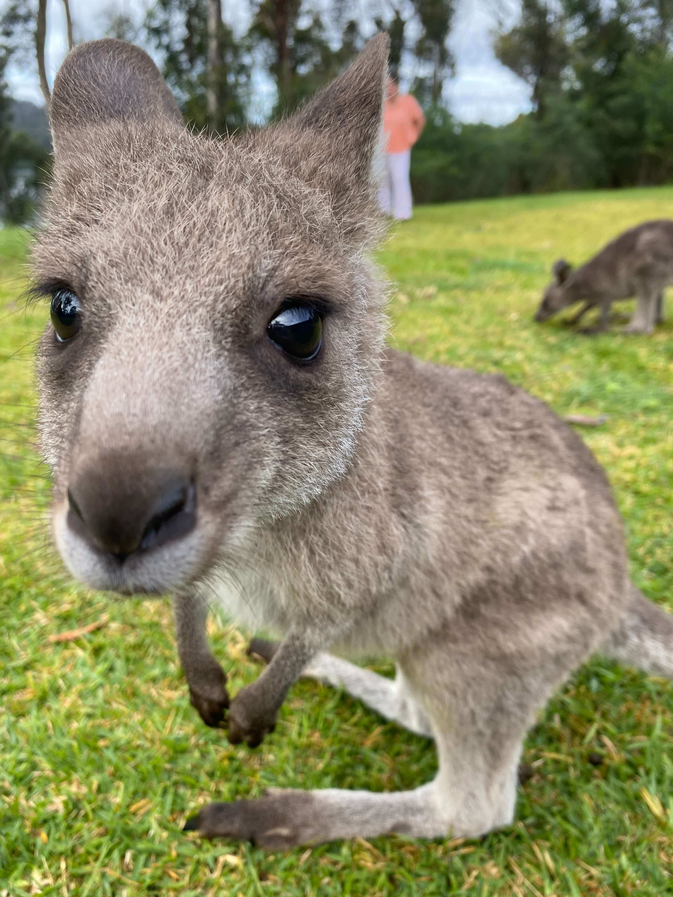

Our Mission:
We rescue orphaned joeys and injured roos, care for them and send them back to wild!
My Furry Friends:
-

kanku
-

Lily
-

Joey London
-
Joey Obby
-
Casey
-

Jack
Volunteer responsibilities:
- poo pickup -kangaroo stomachs are very sensitive so we must keep the grass they graze clean.
- cleaning joey house.
- bottle feeding joeys
- preparing snack baskets for joeys - growing joeys need three types of dirt, bark, hey, and grain in order to build mussle and get all the nutrians and minerals they need!
- joey walking - exercise is important for developing legs!
Come Help Us Out!
Call +61 123 123 123 or donate on our website you can also visit our Facebook and Instagram social media pages or just stop by at 123 Fiord Road, NSW 2000 at the end of the longest gravel road!